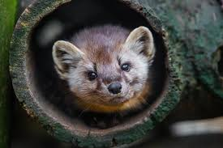
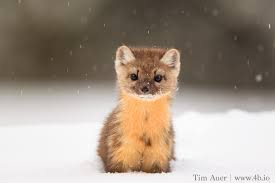
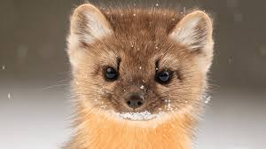
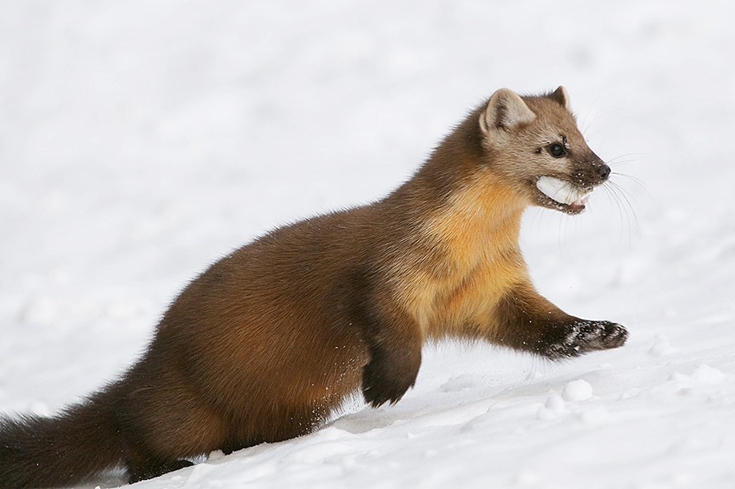
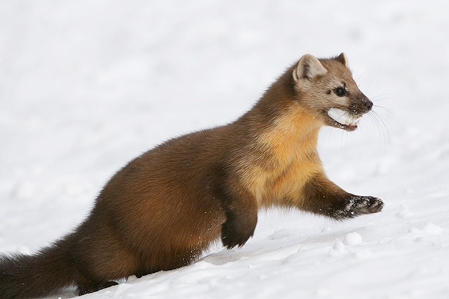

What is an American Marten?
The American Marten is a long, slender-bodied weasel. It has large rounded ears, short limbs, and a bushy tail. Their long silky fur ranges in color from pale yellowish to almost black. They are primarily found in mature, northern forests. They den in the hollow trees or vacant ground burrows.
Life In the Wild
American Martens are shy, curious, solitary, and territorial. Neither sex will allow another marten of the same sex in their home. The males defends an average territory of 1-3 square miles. Martens are agile climbers, they spend much of their time in trees. They often make their nests in trees, they also bear an annual litters of 2-4 young up in the trees as well.They prey on squirrels, chipmunks, mice, birds, birds eggs, fish, nuts, reptiles, and fruit.
  
 

Why are the American Martens Endangered
The American Marten's are endangered due to the destruction of coniferous forest habitats. They are also illegally trapped for their thick fur for clothing.